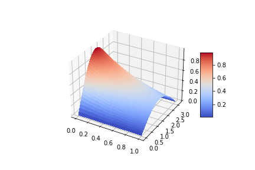
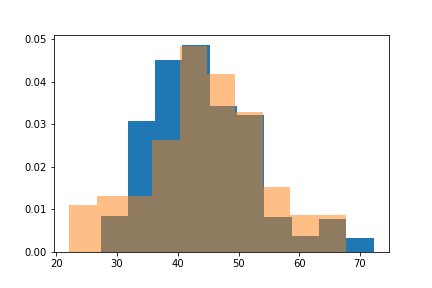
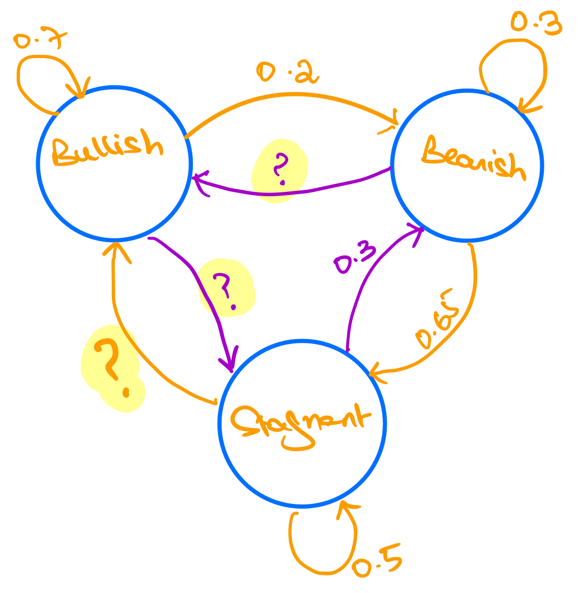

Quantitative Finance
About the course
This course is designed to develop quantitative skills that students require to implement financial theories. As an ever-increasing number of
financial services firms are applying sophisticated mathematical models in their trading, pricing, risk and asset management functions, the need
for more specialized and advanced courses has emerged where students and working professionals can acquire the knowledge they need to
competently and responsibly perform these functions. This course can be considered as a first course in this stream.
Course Objectives
- Basics of quantitative finance
- Elementary stochastic calculus, Ito lemma and its uses, Stochastic differential equations
- Introduction to Options and Option Pricing
- Fixed income securities
- Interest rates and Term structure of interest rates
- Modeling Financial Risk
- Numerical methods and simulations to price financial instrument
Primary Text
- PW: Wilmott. P, Paul Wilmott on Quantitative Finance, Wiley 2006
Other Reference Texts
- DH: Higham. D, An Introduction to Financial Option Valuation, Cambridge University Press 2004
- ME: McNeil. F, Frey. R & Embrechts. P, Quantitative Risk Management, Princeton University Press 2005
Course Material
Python Labs